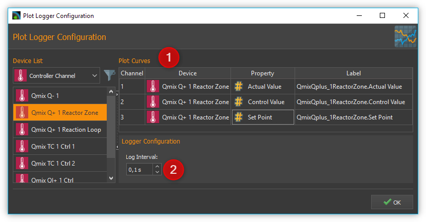
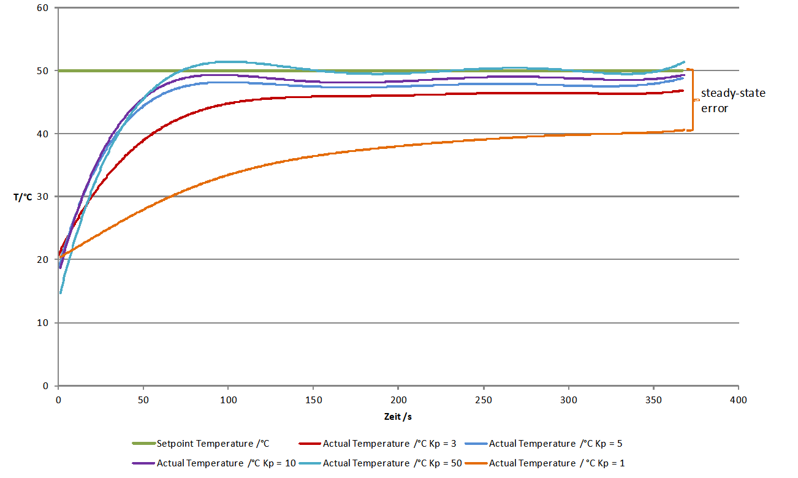
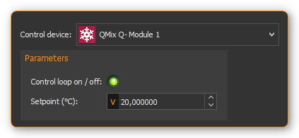
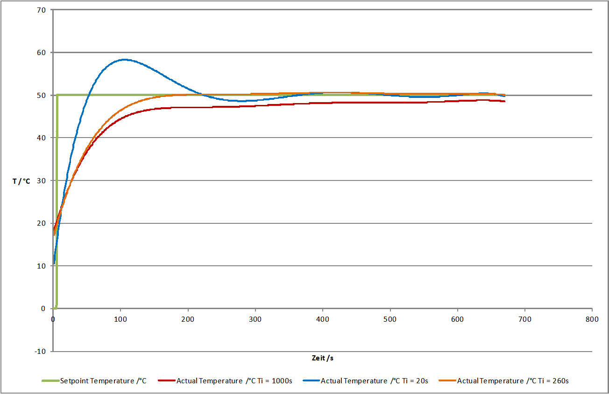

How to set controller parameters
Closed control loop and PID controller equation
The controller (e.g. PID controller) and the controlled system (e.g. temperature-controlled system) together make up a feedback system, the closed control loop. (see figure below)

A PID-controller determines thh control value u at the time t1 using the following equation:

The control value contains 3 shares.
The proportional share (P) forms by means of the factor Kp the direct effect of the control error on the control value. |
|
|
The integral share (I) computes the sum of the error over the time and by means of Kp and the time constant Timaps it to the control value. The bigger Kpand the smaller Tithe bigger the integral share of the control value. |
The differential share depends on the temporal change of the actual value that is mapped to the control value by Kpand Td. |

{kind=link}
{kind=link}
Preparations for setting controller parameters
Initially make the plot of the datalogger plugin show the measurement value and the control value to you. (refer to section Process Data Graph) ❶ It is recommended to do the same with the setpoint value. It is not necessary but facilitates orientation within the plot. (see figure below)

The setting for Log Interval ❷ depends on the change frequency of the actual value. You should get a useful graph if you set Log Interval to the sample time used by your control channel (see next section).
Choosing the sample time
The time between 2 computations of the control value is defined as sample time. The smaller the sample time the more often the control value is calculated. As a rule of thumb you can keep in mind that the sample time should not be higher than one tenth of the smallest time constant in the closed control loop. Experiences have shown that the following values achieved useful results (stable control) with the appropriate devices.
Application |
Sample Time (ms) |
|---|---|
Qmix Q+ |
500 |
Pressure control using Nemesys and Qmix P |
50 |
Tip
For the sample time choose values that are less than or equal to 1/10 of the smallest time constant occurring in the control loop.
Setting the control value limits
You can limit the minimum (Umin) and the maximum (Umax) control value of the controllers. The control value should have a sufficient stroke in order to reach the desired setpoint values. But you should also take care not to damage the controlled system by choosing to large control value limits. (e.g. too high flow rate of a neMESYS dosing module in a pressure controlled system leads to damage of the fluidic system) You should test the control value limits by temporarily acting with them on your controlled system. (e.g. dose with a Nemesys pump using a flowrate equal to the control value limit) Futhermore you have to choose a value assumed by the controller if the control channel is disabled (Udisabled) which is usually zero.
Attention
Insufficient limitation of the control value can lead to damage of the controlled system.
Determination of PI parameters
A temperature control system usually makes up a delay line containing one or more delay time constants. It can often be approximated by a first-order delay line. The appropriate step response function is:

Setting the controller parameters targets the compensation of the delay time constant T1and adapting the controller gain Kp in order to reach an efficient control behaviour. In practice T1is often unknown, but you can gradually approach to a useful result using the following procedure.

Choose the values for Sample Time, Umin, Umax und Udisabled according to the recommendations in the previous sections. Disable the differential and integral share by setting the controller time constants to 0. This leads to a simplified controller equation.
\[U = {K_{p} \cdot e}\]Set a moderate value for the proportional gain. Keep in mind that by means of Kp the control error immediately impacts the control value. Choosing a too big value for Kpcan drive the controller into saturation.
Give a setpoint step to your control loop, i.e. by changing the setpoint temperature from room temperature to 50°C and activating the control channel. (see section Entering setpoint and Switching control devices on / off)
Providing a first-order delay line the actual value will behave according to the following figure.
Depending on chosen controller proportional gain Kp the actual value will vary quickly settle near the setpoint value. Due to the fact that a proportional controller is not able to fully compensate a delay line, a steady-state error establishes. If Kp is set too low, the actual value approaches only very slowly the target value. (see curve for Kp = 1 in figure above) If Kp is set to high, the actual value overshoots, optionally oscillates about the setpoint. (see curve for Kp = 50 in figure above) In the provided example the actual value reaches a steady-state quickly without overshooting using Kp=3. This is why we use that value for further optimizations.
In the next step set Tiin a way that the steady-state error is compensated. You should begin using a large time constant Ti which means a small integral share.
Give a setpoint step to your control loop, i.e. by changing the setpoint temperature from room temperature to 50°C and activating the control channel. (see section Entering setpoint and Switching control devices on / off)
Lower the time constant Ti if you want to reduce time for permanently reaching the setpoint value. Please notify that a time constant Ti set to small (large integral share) can lead to the control loop oscillating. In the provided figure you can see that Ti=260s leads to a good result. The actual value matches the setpoint value and the system does not oscillate. Using Ti=1000s the setpoint is not reached within the illustrated time range and Ti=20s leads to the system overshooting heavily. (see figure below)
In many cases (i.e. temperature control) a PI controller is sufficient. There is no steady-state error and the dynamic behaviour is satisfactory. If the controller shall be robust with respect to sudden disturbances, it might be useful to include a differential component. A detailed consideration of control stability, control behaviour with respect to setpoint changes and disturbances is beyond the scope of this practical introduction. Reference is therefore made at this point on the control engineering literature.
Now create a PID parameter preset with the values you have determined and assign a unique name.